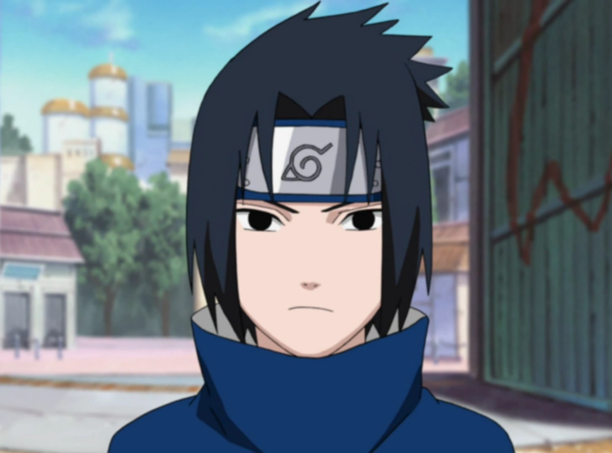

As an average anime fan, I did come across Naruto and Naruto: Shippuden (obviously). But what were the factors that ultimately made me decide that there will never come an anime which is as relatable to me than Naruto.
I came across Naruto for the first time during the pandemic era of 2020, and instantly became hooked to it. II had just finished Black Clover anime and I was deciding between Bleach and Naruto. Oh boy did I make the right decision.
Here are some of the reasons why Naruto is my favortie anime at the moment.
1. Naruto
Where else to start than the protagonist of the series? Naruto as a character is just so well-written (kudos to Kishimoto). Naruto's rise from being the ignored kid from Konoha to becoming the Hokage and the strongest shinobi with the help of Kurama has always been my favorite character development.
Naruto didn't have many elders guiding him during his childhood. The Hokage at the time (Hiruzen Sarutobi), took care of Naruto by giving him money every month, and nothing else whatsover. A kid doesn't need money, a kid needs guidance and affection from the elders around them. If it was any kid other than Naruto, they would've resorted to the evil ways. With no friends in the beginning, I'm surprised the kid Naruto coped with loneliness pretty well.
Boruto's Dad

Sasuke Uchiha
2. Sasuke Uchiha
This guy. The more tragedy a character encounters in this anime, the more badass they become, except for the protagonist. As Naruto's rival and the sole survivor of the Uchiha clan, Sasuke Uchiha is probably tied with Naruto in terms of strength and power.
The amount of tragedies and uncircumstantial events circling around this guy is so mindblowing. His entire clan is wiped of by his own brother Itachi, makes it his life's goal to kill him, leaves Konohagakure to join Orochimaru, trains under Orochimaru, kills his master, seeks and kills his brother only to find out he was a good guy protecting him and the village? That must've toppled Sasuke's entire world.
And instead of respecting his brother's wishes to protect the village, Sasuke vows to take revenge on Konahagakure by destroying it, and then changes his mind during the Great Ninja War to become Hokage. That was a good rollercoaster ride bro.
3. Awesome Characters
If Naruto anime was a dish, these characters were the spice. Despite Madara Uchiha being an antagonist, the amount of sheer awesomeness he exhibits in the course of the anime was incredible. You should see the scene where a reanimated Madara fights against an entire battalion and the 5 Kages and wins effortlessly.
Jiraiya is one of my favorite characters in the entire Anime universe. I would put him at top 3. He raised and trained Naruto for 2 years under his tutelage and did a pretty good job at it too. His death was so sad, I teared up.
Kakashi Hatake, aka The Copy Ninja, is a really wholesome and a powerful character who does eventually become the Sixth Hokage. He really brings out the typical OP but wholesome mood. My favorite moments of Kakashi is when he is with his friend, Might Guy
Minato Namikaze, father of Naruto and the Fourth Hokage would've made the list, but his screentime is lesser than the above characters, but as far as I have seen, if I would be any character in Naruto I would be Minato.
There are many other factors that I could include that justifies my point, but the above content are the main reasons why the Naruto universe will always have a special place in my mind, for teaching me many lessons through brilliant illustrations of a world we would all wish to be in the future, like the way Naruto brought peace between the warring villages.
Praveen Rao V P
Praveen Rao V P, 20, is an Indian college student aspiring to be a top-rated Front-End Developer. He writes blogs as a way to vent out / express his opinions on a wide range of topics he finds interesting.
Praveen is now open to grabbing opportunities in a sophisticated work environment. Socials are listed below!